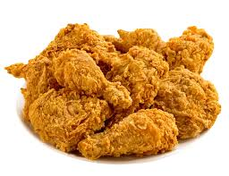

치킨(영어: chicken)은 닭튀김으로 토막낸 닭고기에 튀김옷 또는 반죽물을 덮어 기름에 튀겨 만든 한국의 음식이다. "치킨"은 "닭튀김"이라는 뜻의 영어 "프라이드 치킨(fried chicken)"의 줄임말이자 표준국어대사전에 등재되어 있는 외래어에 속한다.다양한 형태로 변형하여 양념치킨, 간장치킨, 파닭, 닭강정 등으로 만들기도 한다. 반찬으로 "치킨무"라 불리는 무 초절임을 함께 낸다. 음료수는 탄산음료를 같이 마시거나 맥주를 곁들여 먹는 치맥을 하는 경우가 많으며, 맥주 대신 소주와 과실주를 곁들이기도 한다. 미국식 프라이드 치킨은 두꺼운 튀김옷을 입혀 다소 거친 식감이 있지만, 한국식 치킨은 얇은 튀김옷으로 두 번 튀겨내어 식감이 더욱 바삭한 것이 큰 특징이다. 조각내서 튀기는 이유는 닭을 통째로 튀기면 부위별로 익는 시간이 다르기 때문이다. 튀김기름의 온도는 160~190도 정도가 적당하다. 보통 육계(肉鷄)라 불리는 외래품종인 브로일러(broiler)를 많이 사용하지만, 육계와 산란계를 교잡한 백세미(White semi broiler)를 사용하기도 한다.
